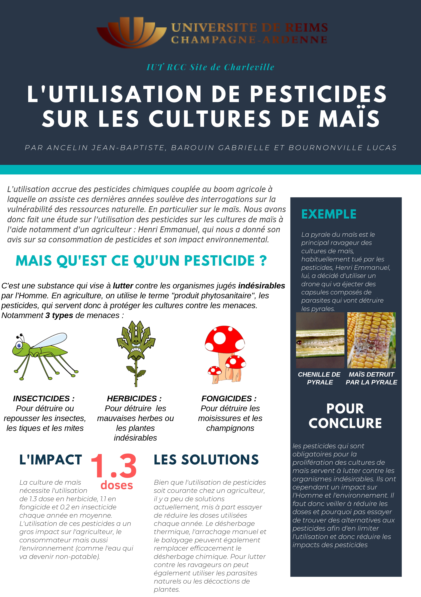
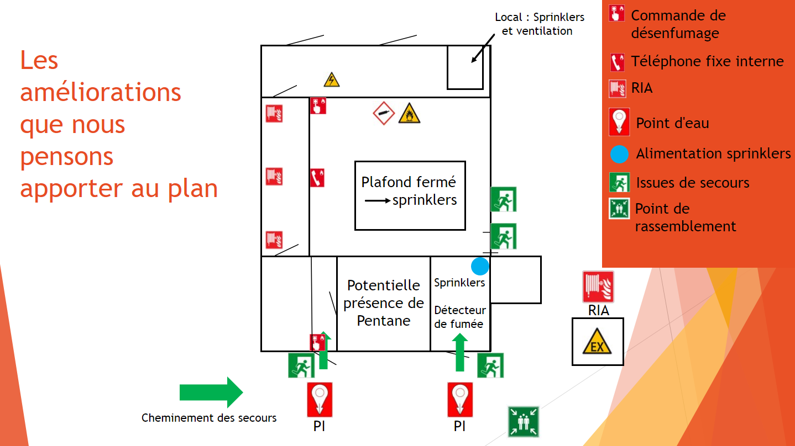
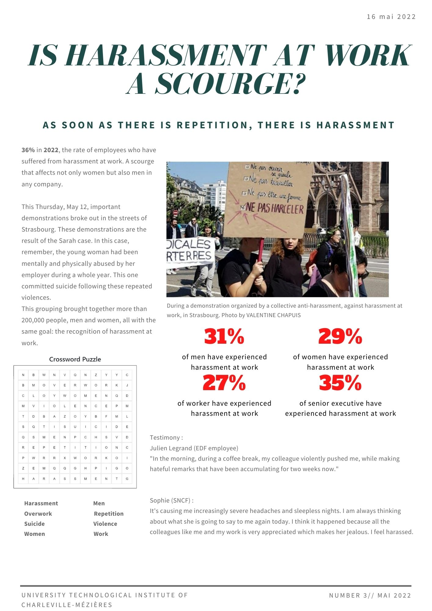

SEMESTRE 2
Voici la liste des SAE que j'ai pu réaliser
lors du Semestre 2 du BUT HSE.
SAÉ 2.01 : Analyse des risques environnementaux dans une perspective de transition environnementale. Voici mon travail (PDF). J'ai choisi comme sujet l'impact des pesticides sur la culture du maïs. En travaillant sur ce sujet, j'ai acquis la compétence d'évaluation des risques environnementaux et j'ai appris à collecter des données précises et fiables pour mener une analyse. J'ai également appris à me baser sur la réglementation et des sources documentaires fiables pour évaluer les risques, ainsi qu'à identifier le côté subjectif dans une méthode d'évaluation des risques. De plus, j'ai appris à recommander des outils d'analyse appropriés et à justifier mes conclusions et choix méthodologiques. Ces compétences me seront essentielles lorsque je voudrai évaluer les risques environnementaux et recommander des mesures préventives pour minimiser l'impact de nos activités sur les ressources naturelles et les écosystèmes.
 SAÉ 2.02 : Maîtriser les risques dans le cadre d'une situation de travail simple. Voir ma vidéo (MP4). J'ai développé la compétence de maîtrise des risques professionnels, technologiques et environnementaux (PTE) à travers le projet SAÉ 2.02. J'ai appris à proposer un plan d'action pertinent pour améliorer une situation de travail en partant d'une évaluation des risques préétablie tout en tenant compte de l'ensemble des priorités et contraintes. J'ai également acquis la capacité d'évaluer l'efficacité des actions proposées pour réduire un risque et de planifier les actions en lien avec l'objectif initial. Ayant réalisé cette vidéo intégralement sous PowerPoint, j'ai pu développer mes compétences Powerpoint ainsi que mes compétences de prévention à travers une vidéo.
SAÉ 2.02 : Maîtriser les risques dans le cadre d'une situation de travail simple. Voir ma vidéo (MP4). J'ai développé la compétence de maîtrise des risques professionnels, technologiques et environnementaux (PTE) à travers le projet SAÉ 2.02. J'ai appris à proposer un plan d'action pertinent pour améliorer une situation de travail en partant d'une évaluation des risques préétablie tout en tenant compte de l'ensemble des priorités et contraintes. J'ai également acquis la capacité d'évaluer l'efficacité des actions proposées pour réduire un risque et de planifier les actions en lien avec l'objectif initial. Ayant réalisé cette vidéo intégralement sous PowerPoint, j'ai pu développer mes compétences Powerpoint ainsi que mes compétences de prévention à travers une vidéo.
SAÉ 2.03 : Mettre à jour un plan d'intervention interne Voici mon travail (PPT). À travers ce projet, j'ai appris à mettre à jour les éléments simples d'un plan d'intervention interne existant, à planifier et réaliser un exercice coordonné dans le cadre d'une exposition immédiate à une source de danger, et à présenter le RETEX de l'exercice aux instances internes à l'entreprise ou l'organisation. J'ai également appris à assurer la sécurité des personnes, des biens et de l'environnement en cas de situation d'urgence, en travaillant sur une situation réelle, en analysant la documentation fournie, en corrigeant ou mettant à jour les éléments simples du plan d'intervention, en préparant et analysant un exercice de sécurité, et en réalisant et présentant le retour d'expérience de l'exercice auprès de la direction et des services concernés.
SAÉ 2.04 : Préparer et animer en groupe une séquence autour d'un risque dans le cadre d'une campagne de sensibilisation Dans le cadre de mon projet d'étude, j'ai réalisé une vidéo visant à sensibiliser les employés de toutes les entreprises sur la problématique du harcèlement au travail. Cette vidéo a été utilisée pour sensibiliser un public cible à cette thématique, et j'ai ensuite rédigé un article de presse sur le sujet. Grâce à ce projet, j'ai acquis les compétences suivantes : sensibiliser une audience spécifique, collecter et synthétiser des informations pertinentes, sélectionner des sources fiables, identifier les causes d'un problème, utiliser des données pertinentes pour illustrer mes propos, rédiger un article de journal en anglais, et captiver mon public en utilisant un format original.